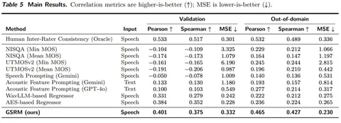
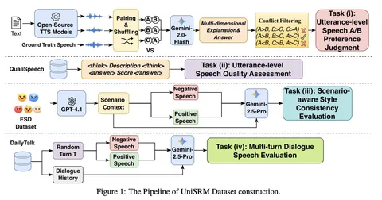

В SpeechJudge, которую мы уже разобрали главный риск был в том, что правильный вердикт Gemini ещё не гарантировал нормальный reasoning trace. GSRM и UniSRM подходят к проблеме с двух разных сторон. В GSRM считают, что омни-модель по умолчанию плохо извлекает тонкие признаки из сырого аудио. В UniSRM отдельно награждают не только финальный ответ, но и промежуточные оценки внутри рассуждения.
GSRM: Generative Speech Reward Model for Speech RLHF
Сначала авторы оценили человеческий потолок. Аннотаторов разделили на две группы и посчитали корреляцию между их оценками: Pearson correlation составила всего 0,53.
Затем попробовали готовые аудиомодели без дообучения. При прямой оценке сырого аудио корреляция была слабоположительной или даже слабоотрицательной. Главный тезис GSRM: проблема не столько в ризонинге, сколько в восприятии. Модель может нормально рассуждать, но сначала ей нужно явно показать, что происходит в аудио.
Для каждой гласной считают набор DSP-признаков просодии, текстовая модель превращает их в evidence log, увязанный с ground-truth-оценкой. На этих логах учат Qwen2.5-Omni-7B выдавать такие же рассуждения и оценки уже по сырому аудио — DSP нужны только для синтеза обучающих данных.
На OOD-данных модель даёт PCC 0,465 — около 87% от человеческого потолка; помогает и test-time scaling, насыщение примерно к 16 семплам.
GSRM проверили и живым reward'ом: через GRPO на нём дообучили full-duplex speech LLM, она выигрывала у базовой в 82% сравнений по натуральности и в 60–74% по остальным измерениям. Код и модели не открыли.
UniSRM: A Unified Speech Reward Model for Reasoning-Based Fine-grained Assessment
UniSRM решает четыре задачи: парное сравнение аудио, детальный MOS-скоринг, соответствие речи сценарию и оценку реплики в контексте диалога. Три задачи pairwise, а MOS — pointwise (одно аудио оценивают по семи аспектам от 1 до 5).
После SFT идёт GRPO с составной наградой, где RCR — reasoning-consistent reward. Награда складывается из трёх частей:
1) Reward за формат: неправильный формат получает −1, правильный — 0.
2) Reward за вердикт: accuracy для pairwise-задач и соответствующая оценка для pointwise.
3) Reward за ризонинг: промежуточные оценки по отдельным аспектам сравниваются с эталоном.
В pairwise-задачах смотрят, на какой доле аспектов знак разницы между двумя аудио совпал с ground truth. В pointwise используют единицу минус среднюю нормированную ошибку по семи аспектам. Если награждать только финальный ответ, модель может угадать его на бессвязном ризонинге. Промежуточные проверки оставляют меньше пространства для такого трюка.
RCR-GRPO обошёл и чистый SFT, и GRPO с наградой только за вердикт — причём последний местами был хуже SFT. UniSRM сильнее сравниваемых моделей на всех четырёх задачах, но метки ставила LLM, люди верифицировали лишь часть — цифры смещены в её сторону. Внутри онлайн-RL судью не проверяли.
Что можно забрать из трёх работ
Награждать не только вердикт, но и промежуточные оценки.
Разметка при этом дорогая: 99 тысяч пар для SpeechJudge собирали два месяца и потратили около 70 тысяч долларов. Это хорошо показывает, какой ценой получают базовый human preference signal.
Василий Ерёмин

